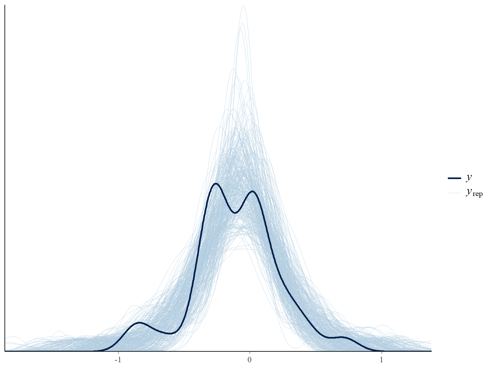
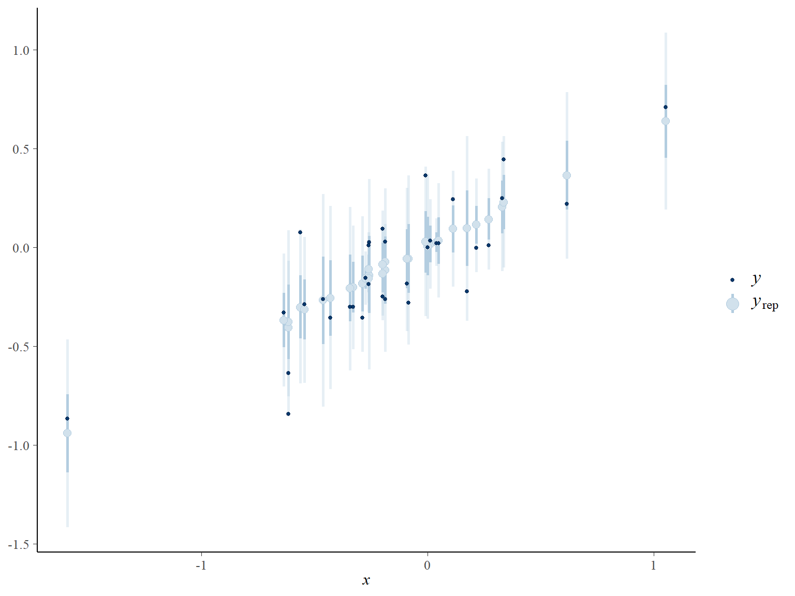
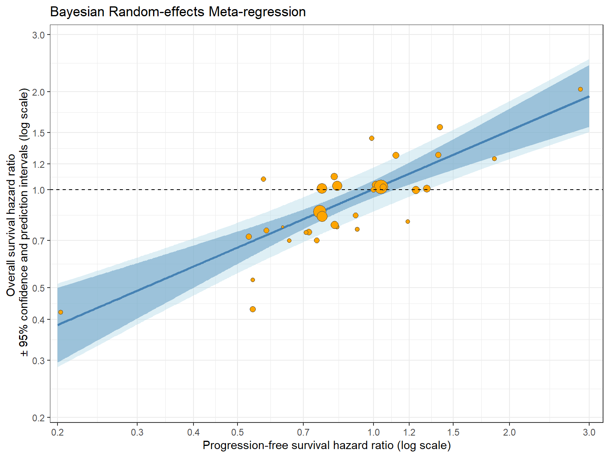

library(openxlsx)
library(gt)
library(tidyverse)
library(cmdstanr)
library(bayesplot)Bayesian Random-effects Meta Regression
Required Libraries
Loading Data
df1 <- read.xlsx(data.path, sheet = 1)Initial Sanity Checks
str(df1)'data.frame': 34 obs. of 10 variables:
$ Study : chr "Study 1" "Study 2" "Study 3" "Study 4" ...
$ HR.OS : num 0.741 0.756 1.277 1.01 0.43 ...
$ OS.ln.HR : num -0.3 -0.28 0.244 0.01 -0.844 ...
$ OS.se : num 0.18 0.25 0.165 0.141 0.189 0.198 0.269 0.126 0.184 0.068 ...
$ HR.PFS : num 0.72 0.92 1.12 1.31 0.54 ...
$ PFS.ln.HR: num -0.3285 -0.0834 0.1125 0.27 -0.6162 ...
$ PFS.se : num 0.177 0.255 0.168 0.134 0.17 0.186 0.264 0.126 0.137 0.06 ...
$ n1 : num 82 34 73 136 95 75 42 125 109 622 ...
$ n2 : num 73 42 74 138 86 69 39 125 110 618 ...
$ non.prop : chr "0" "0" "0" "1" ...dim(df1)[1] 34 10| Study | HR.OS | OS.ln.HR | OS.se | HR.PFS | PFS.ln.HR | PFS.se | n1 | n2 | non.prop |
|---|---|---|---|---|---|---|---|---|---|
| Study 1 | 0.7408182 | -0.3000 | 0.180 | 0.7200029 | -0.3285 | 0.177 | 82 | 73 | 0 |
| Study 2 | 0.7557837 | -0.2800 | 0.250 | 0.9199831 | -0.0834 | 0.255 | 34 | 42 | 0 |
| Study 3 | 1.2769827 | 0.2445 | 0.165 | 1.1190723 | 0.1125 | 0.168 | 73 | 74 | 0 |
| Study 4 | 1.0100502 | 0.0100 | 0.141 | 1.3099645 | 0.2700 | 0.134 | 136 | 138 | 1 |
| Study 5 | 0.4299871 | -0.8440 | 0.189 | 0.5399925 | -0.6162 | 0.170 | 95 | 86 | 1 |
| Study 6 | 0.6999825 | -0.3567 | 0.198 | 0.7499866 | -0.2877 | 0.186 | 75 | 69 | 1 |
Derived Quantities
df1$weight <- 1 / (df1$OS.se)^2Generating Treatment Effect on Surrogate Endpoint in New Trials
range(df1$HR.PFS)[1] 0.2034164 2.8662369new.data <- data.frame(PFS.ln.HR = log(seq(0.2,3, length=1000)))Model
A random-effects meta-analysis allows for the differences in the treatment effect between studies. In a Bayesian random-effects meta-regression framework, the model can be written as
\[Y_{2i} \sim N\left(\mu_{2i},\sigma_{2i}^2\right), \qquad i=1,\ldots,N,\]
where the mean (study-specific treatment effect) is modeled as
\[\mu_{2i} = \lambda_{0i} + \lambda_1 Y_{1i}.\]
The study-specific intercepts are assumed to follow a common Normal distribution:
\[\lambda_{0i} \sim N\left(\beta,\psi^2\right).\]
Here:
- \(Y_{1i}\) = summary measure of the treatment effect on the candidate surrogate outcome in study \(i\);
- \(Y_{2i}\) = summary measure of the treatment effect on the target outcome in study \(i\);
- \(\mu_{2i}\) = underlying true treatment effect on the target outcome in study \(i\);
- \(\sigma_{2i}\) = standard deviation of the estimated treatment effect \(Y_{2i}\);
- \(\lambda_{0i}\) = study-specific true effect on the target outcome when the treatment effect on the surrogate is zero;
- \(\lambda_1\) = regression coefficient describing the relationship between treatment effects on the surrogate and target outcomes;
- \(\beta\) = mean of the overarching distribution of the study-specific intercepts; and
- \(\psi^2\) = between-study variance representing heterogeneity in the study-specific intercepts.
In the Bayesian framework, all parameters are given prior distributions :
\[\beta \sim N(0,10^2),\]
\[\lambda_1 \sim N(0,10^2),\]
\[\psi \sim \operatorname{Half}\text{-}t_3(0,2.5), \qquad \psi > 0,\]
and
\[\lambda_{0i}^{\mathrm{raw}} \sim N(0,1), \qquad i=1,\ldots,N.\]
Model Fitting
Preparing data for STAN
STAN_data.BREMR <- list(
N = nrow(df1),
Y2 = df1$OS.ln.HR,
Y1 = df1$PFS.ln.HR,
sigma2 = df1$OS.se
)STAN Model Compilation
model.BREMR <- cmdstan_model(stan_file = BREMR.model.path)Running HMC
n.chains <- 4
n.samples.per.chain <- 10000fit.BREMR <- model.BREMR$sample(
data = STAN_data.BREMR,
chains = n.chains,
parallel_chains = n.chains,
iter_warmup = 1000,
iter_sampling = n.samples.per.chain,
seed = 14,
refresh = 0 # suppress the iteration progress messages
)Running MCMC with 4 parallel chains...
Chain 1 finished in 1.7 seconds.
Chain 2 finished in 1.7 seconds.
Chain 3 finished in 1.9 seconds.
Chain 4 finished in 1.7 seconds.
All 4 chains finished successfully.
Mean chain execution time: 1.7 seconds.
Total execution time: 3.9 seconds.n.posterior.samples <- n.chains * n.samples.per.chainSTAN Diagnostics
fit.BREMR$cmdstan_diagnose()Checking sampler transitions treedepth.
Treedepth satisfactory for all transitions.
Checking sampler transitions for divergences.
No divergent transitions found.
Checking E-BFMI - sampler transitions HMC potential energy.
E-BFMI satisfactory.
Rank-normalized split effective sample size satisfactory for all parameters.
Rank-normalized split R-hat values satisfactory for all parameters.
Processing complete, no problems detected.Posterior Predictive Check - PPC
It is a way of checking whether my Bayesian model can generate data that look reasonably similar to the data I actually observed.
Suppose we observe \(n\) data-points. For each posterior draw of the parameters, we draw a random sample of \(n\) data-points.
Here in NSCLC data-set, there are \(34\) studies. So we shall have \(40000\) replicated data-sets, each having \(34\) studies.
Y2.replicated.draws <- fit.BREMR$draws(variables = "Y2_rep", format = "matrix")
dim(Y2.replicated.draws)[1] 40000 34Plot the density of the observed data and densities of a few randomly selected replicated data-sets to assess the Bayesian model.
# a few randomly selected replications
temp <- sample(1:n.posterior.samples, 300)
ppc_dens_overlay(y = df1$OS.ln.HR,
yrep = Y2.replicated.draws[temp, ])
Plot the observed y~x along with the confidence intervals calculated from the replications of each y.
For instance, here I shall have \(34\) points each corresponding to a study in the NSCLC data, and \(34\) confidence intervals accompanying them. Confidence interval for \(Y_{2j}\) was calculated from the \(40000\) replications of \(Y_{2j}\) \(\forall j = 1(1)34\).
ppc_intervals(y = df1$OS.ln.HR,
yrep = Y2.replicated.draws,
x = df1$PFS.ln.HR)
Posterior Summaries of Parameters of Interest
fit.BREMR$summary(variables = c("beta", "lambda1", "psi")) |>
gt()| variable | mean | median | sd | mad | q5 | q95 | rhat | ess_bulk | ess_tail |
|---|---|---|---|---|---|---|---|---|---|
| beta | 0.006180448 | 0.006537214 | 0.03096523 | 0.03028103 | -0.045064569 | 0.05654633 | 1.000123 | 38508.25 | 27280.71 |
| lambda1 | 0.597548630 | 0.597439025 | 0.08833982 | 0.08801706 | 0.452784559 | 0.74182896 | 1.000058 | 41274.61 | 30769.52 |
| psi | 0.053805557 | 0.047039395 | 0.03841302 | 0.03959497 | 0.004457734 | 0.12550724 | 1.000062 | 12334.08 | 18098.59 |
Posterior means/medians can be used as Bayesian estimates of the parameters.
Prediction of TE on Clinical Outcome in New Trials
Now I take posterior sample to calculate the predictions on new future trials, credible intervals and prediction intervals. These are the main components of trial-level association plot.
posterior.draws <- fit.BREMR$draws(
variables = c("beta", "lambda1", "psi"),
format = "matrix"
)data.frame(head(posterior.draws)) |>
gt()| beta | lambda1 | psi |
|---|---|---|
| 0.006426561 | 0.4507041 | 0.12627089 |
| -0.030895263 | 0.5002144 | 0.08907077 |
| -0.001889851 | 0.4771283 | 0.05453900 |
| 0.006490522 | 0.6281000 | 0.13180536 |
| 0.004406353 | 0.5198999 | 0.09439286 |
| 0.060436184 | 0.6519882 | 0.03767269 |
dim(posterior.draws)[1] 40000 3Each row of posterior.draws is a posterior sample from the joint posterior distribution of the parameters.
Now I create a design matrix X representing new studies on which we will make future predictions.
X <- matrix(c(rep(1, 1000), new.data$PFS.ln.HR),
nrow = 1000, ncol = 2, byrow = FALSE)For each new trial in X, corresponding to \(40000\) posterior samples of the parameters, there will be \(40000\) predictions of log.HR.OS. Below I do a matrix operation to obtain all the \(1000 \times 40000\) predictions.
BREMR.posterior <- X %*% t(posterior.draws[,1:2])dim(BREMR.posterior)[1] 1000 40000Each row of BREMR.posterior represents \(40000\) posterior draws of log.HR.OS i.e. the response variable, corresponding to a new log.HR.PFS of a new trial.
Point Estimates
For a new trial, to get a prediction of log.HR.OS, we must calculate the mean of the posterior samples.
BREMR.fit <- apply(BREMR.posterior, 1, mean)BREMR.fit has \(1000\) predictions corresponding to \(1000\) new future trials.
Credible Intervals
Credible intervals are obtained from the quantiles of the posterior distribution. Here I calculate the \(95\%\) credible intervals for the predictions on new trials.
BREMR.ci <- t(apply(BREMR.posterior, 1, quantile, probs = c(0.025, 0.975)))Prediction Intervals
Prediction intervals are obtained from the quantiles of the posterior predictive distribution.
The posterior distribution of concern here is
\[p\left(\beta, \lambda_1, \psi \mid Y_{11}, Y_{21}, Y_{12}, Y_{22}, \ldots, Y_{1N}, Y_{2N}\right).\] Already I have \(40000\) samples from this posterior distribution.
We want the predictive distribution of \(\widehat{\mu_{2 \cdot \text{new}}}:\) the true treatment effect on clinical outcome in a future trial.
In any future trial, let \(Y_{1 \cdot \text{new}}\) be the observed treatment effect on surrogate endpoint. Then we must have
\[\widehat{\mu_{2 \cdot \text{new}}} \sim \mathcal{N}\left( \beta + \lambda_1 Y_{1 \cdot \text{new}}, \psi^2\right).\]
In Bayesian theory, the predictive distribution is obtained by averaging the likelihood over the entire parameter space where the parameters vary in accordance to the posterior distribution.
Mathematically, we can write the posterior predictive distribution as
\[\displaystyle{\int \limits_{(\beta, \lambda_1, \psi)}} \mathcal{N}\left( \beta + \lambda_1 Y_{1 \cdot \text{new}}, \psi^2\right) \cdot p\left(\beta, \lambda_1, \psi \mid \cdots \right) d\beta \; d\lambda_1 \; d\psi.\]
As analytical solution cannot be traced, we resort to numerical solution as follows :
- Using posterior sample \((\beta_{(m)}, \lambda_{1(m)}, \psi_{(m)})\) calculate \(\beta_{(m)} + \lambda_{1(m)} Y_{1 \cdot \text{new}}\) \(\forall m = 1(1)40000\).
- Take a random sample from \(\mathcal{N}\left(\beta_{(m)} + \lambda_{1(m)}, \psi_{(m)}^2 \right)\) \(\forall m = 1(1)40000\).
- Calculate \(q_{0.025}\), \(q_{0.975}\) for the random samples just obtained.
- Repeat the above \(3\) for all the new trials to get predictive interval around their predictions.
Now I proceed to calculate the \(95\%\) posterior prediction intervals.
u <- rnorm(n.posterior.samples, 0, sd = posterior.draws[,3])
BREMR.predictions <- BREMR.posterior +
matrix(rep(u, 1000),
nrow = 1000,
ncol = n.posterior.samples,
byrow = TRUE)BREMR.pi <- t(apply(BREMR.predictions, 1, quantile, probs = c(0.025, 0.975)))Association Plot
I combine all the required components for the trial-level association plot.
BREMR.pred.df <- data.frame(HR.OS = exp(BREMR.fit),
HR.PFS = exp(new.data$PFS.ln.HR),
lower.ci = exp(BREMR.ci[,1]),
upper.ci = exp(BREMR.ci[,2]),
lower.pi = exp(BREMR.pi[,1]),
upper.pi = exp(BREMR.pi[,2]))BREMR.association.plot <- ggplot(df1, aes(x = HR.PFS, y = HR.OS)) +
geom_ribbon(aes(x = HR.PFS, ymin = lower.ci, ymax = upper.ci), data = BREMR.pred.df, alpha = 0.6, fill = "steelblue") +
geom_ribbon(aes(x = HR.PFS, ymin = lower.pi, ymax = upper.pi), data = BREMR.pred.df, alpha = 0.4, fill = "lightblue") +
geom_line(aes(x = HR.PFS, y = HR.OS), data = BREMR.pred.df,
col = "steelblue", linewidth = 1, stat = 'identity') +
geom_point(aes(size = weight), col = "gray30", fill = "orange", shape = 21, data = df1) +
scale_x_continuous(transform = "log",
limits = c(0.2, 3.1),
breaks=c(0.1,0.2,0.3,0.4,0.5,0.7,1,1.2,1.5,2,3),
expand = c(0.01, 0.01)) +
scale_y_continuous(transform = "log",
limits = c(0.2, 3.1),
breaks=c(0.1,0.2,0.3,0.4,0.5,0.7,1,1.2,1.5,2,3),
expand = c(0.01, 0.01)) +
geom_hline(yintercept = 1, linetype = "dashed") +
xlab("Progression-free survival hazard ratio (log scale)")+
ylab(paste("Overall survival hazard ratio" , "\n", "\U00B1", "95% confidence and prediction intervals (log scale)")) +
ggtitle("Bayesian Random-effects Meta-regression") +
theme_bw() +
scale_colour_hue("trial") +
theme(legend.position = "none")BREMR.association.plot
Surrogate Threshold Effect
candidate.HR.PFS <- BREMR.pred.df %>%
filter(upper.pi < 1) %>%
pull(HR.PFS)
BREMR.STE <- round(max(candidate.HR.PFS), digits = 3)
BREMR.STE[1] 0.766